Oder such direkt am Bus.
Fahr über einen Bereich und klick, um die passenden Teile zu sehen.

Tippe auf eine markierte Fläche am Bus
Fahr über einen Bereich und klick, um die passenden Teile zu sehen.

Du fährst selbst einen T4 Syncro? Wähle Motor und Baujahr und finde passende Teile in Shops, Kleinanzeigen und Katalogen.
Nach Name, OE-Nummer oder Stichwort suchen. Eine Zeile antippen zeigt Hinweise und Bezugsquellen. Der Farbpunkt zeigt, für welche Syncro ein Teil gilt.
Nach Baugruppen sortiert, mit Teilenummern, Hintergrundwissen und direkten Wegen zu Katalog und Shop. Allrad, Fahrwerk und Karosserie gelten für alle Syncro, Motorteile sind nach Motorkennbuchstabe zugeordnet.
Syncro-Fahrer zeigen hier Teile, die sie abgeben. Gekauft wird nicht über diese Seite: Du meldest dich direkt beim Anbieter und ihr klärt Preis, Versand und Bezahlung untereinander.
Anzeigen werden von GitHub geladen. Dabei erhält GitHub deine IP-Adresse. Mehr dazu in der Datenschutzerklärung.
Angaben stammen von den Anbietern selbst und sind nicht geprüft. Vor dem Kauf OE-Nummer mit deinem Fahrzeug abgleichen. Verdächtige Anzeige? Schreib mir.
Anbauteile, die es für den T4 und den Syncro wirklich gibt, mit Links zum Hersteller oder Shop. Höherlegung, andere Reifen und Anbauten müssen meist eingetragen werden.
Produktfotos stammen nur aus meinem eigenen Bus. Alle Angaben ohne Gewähr; Preise und Lieferbarkeit siehst du beim Anbieter.
Richtwerte für den 2.5 TDI Syncro (AXL/ACV) aus öffentlichen Daten. Andere Motoren weichen ab; verbindlich sind Serviceplan und der Aufkleber im Motorraum.
Trag ein, wann dein Zahnriemen gewechselt wurde. Du bekommst zwei Termine für deinen Kalender: nach 4 Jahren „Denk an deinen Zahnriemen“ und nach 6 Jahren „Jetzt wird’s Zeit“.
Alles wird nur in deinem Browser berechnet und nicht gespeichert. Der Google-Link übergibt die Termintexte an Google, die .ics-Datei landet direkt bei dir.
Hier stammen Teilenummern und Daten her. Recherchiert am 8. November 2026.
Hinter der Seite steht mein eigener T4 Syncro 2.5 TDI. Diese Teile sind bei mir verbaut und ich empfehle sie.

Hybrid-Dachzelt mit Alu-Hartschale, Liegefläche 140 × 210 cm für 2–3 Personen, inklusive Matratze und Teleskopleiter.
Zum Produkt
Rostfrei, nur ca. 6,5 kg und bis 110 kg belastbar. Montage ohne Bohren, handgefertigt in Deutschland.
Zum Produkt
Flaches Profil, ca. 38 kg, 150 kg dynamische und 400 kg statische Last – trägt auch ein Dachzelt.
Zum Produkt
Rund 30 mm mehr Bodenfreiheit, inklusive Teilegutachten für die Eintragung.
Zum Produkt
Licht-Shop für Zusatzscheinwerfer, LED-Leisten und Stirnlampen – für Nachtfahrten und das Camp.
Zum ProduktMarken, mit denen ich zusammenarbeite und die mich unterwegs begleiten. Mehr über den Bus und unsere Touren findest du auf der @wannabesyncro-Seite. Interesse an einer Kooperation? Schreib an ruben@syncroland.de.
Die neuesten Beiträge von @wannabesyncro.


Hinter syncroland
Angefangen hat alles 2023 mit einem T4, der nur wie ein Syncro aussehen wollte. Heute fahren wir einen echten, mit Freunden komplett gerichtet, und seit 2026 zu dritt.
Tipp auf das Foto oder wisch es weg.
Unsere Geschichte ansehen


Neue Teile, Tipps und Updates zur Datenbank.
@syncroland.deTouren, Umbauten und Schrauber-Alltag mit dem Syncro.
@wannabesyncro